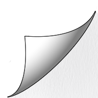
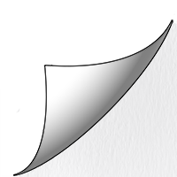

To Be or Not to Be?
Love or Stalking?
Panini has publicly shown affection towards Chowder on multiple occasions, even going as far as calling him her boyfriend. Chowder has rejected any advances made by her, but yet she still continues to push herself on him. Rumor has it that she has been recently lurking around Mung Daal’s catering company, someone even spotted her with a camera near one of the windows. Is this young love or an unhealthy obsession?
 
